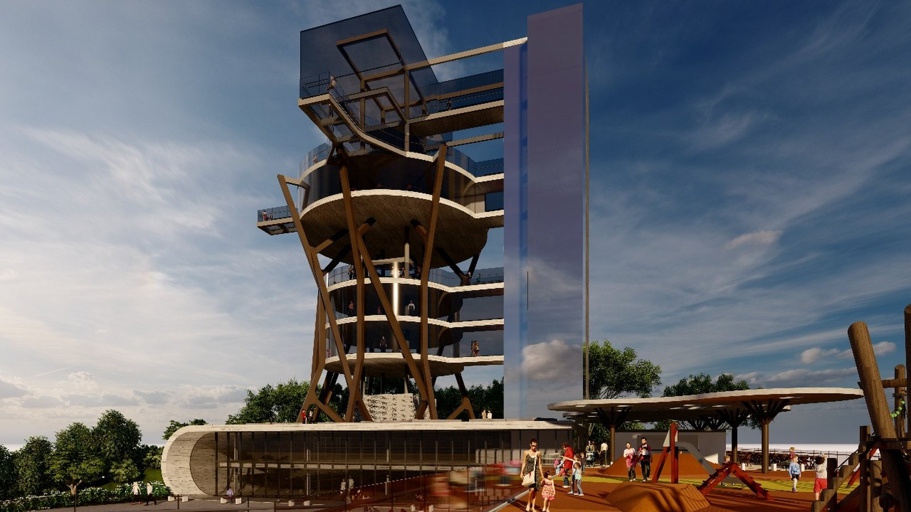

Itapema · Turismo
Itapema · TurismoNinguém se candidatou a tocar o Parque das Capivaras e o Mirante do Encanto por 30 anos, e Itapema revogou as duas concessões no mesmo dia
A matéria de seis dias atrás, que terminou dizendo que nenhum ato falava em novo edital.
O extrato da Concorrência Eletrônica 03.012.2026 saiu no Diário Oficial dos Municípios nesta quinta-feira, assinado no dia 14 pelo secretário municipal de Governo e Infraestrutura, Marcelo Marcio Correia. É o mesmo Mirante do Encanto cuja concessão foi revogada em 7 de outubro por falta de proposta, e sobre a qual escrevemos que nenhum ato publicado dizia se haveria novo edital. Agora diz. A janela é de 55 dias, cinco a mais que a do edital deserto, e vai das 12h desta sexta-feira, 16 de outubro, até as 14h de 10 de dezembro. O Parque das Capivaras, revogado no mesmo dia, não voltou.
Em 30 segundos · Modo de Leitura, formato original Santa Informa
O Mirante do Encanto voltou a leilão.
É a Concorrência Eletrônica 03.012.2026.
Saiu no Diário Oficial em 15 de outubro.
Foi assinada no dia 14.
Quem assinou foi Marcelo Marcio Correia.
Ele é o secretário de Governo e Infraestrutura.
O prazo da concessão é de 30 anos.
A proposta pode ser entregue a partir de hoje.
Começa às 12h de 16 de outubro.
Termina às 14h de 10 de dezembro.
A disputa de lances é no mesmo dia 10.
Às 14h01, na plataforma Licitar Digital.
Ganha quem oferecer o maior valor de outorga.
Esse mirante já tinha ido a leilão em agosto.
Era a Concorrência Eletrônica 03.003.2026.
Ninguém apresentou proposta.
A Prefeitura revogou em 7 de outubro.
Do extrato de revogação ao novo edital: sete dias.
Comparamos os dois editais, palavra por palavra.
O objeto ganhou uma expressão nova.
É exploração econômica sustentável.
A menção ao Canto da Praia saiu do texto.
A janela também mudou de tamanho.
A de agosto tinha 50 dias.
A de agora tem 55 dias.
São cinco dias a mais, conta nossa.
O mirante existe desde 13 de abril de 2012.
Fica no Morro do Cabeço.
Tem 26 metros de altura.
A base está a 130 metros acima do mar.
São 338 metros quadrados construídos.
Divididos em quatro níveis, com elevador.
A entrada é gratuita, diz a Prefeitura.
No segundo andar fica o Mirante Conecta.
É um hub de inovação e coworking público.
O extrato não diz o valor mínimo de outorga.
Nem se a entrada continua de graça.
O Parque das Capivaras caiu no mesmo dia.
Esse não voltou.
Procuramos no Diário Oficial de 8 a 16 de outubro.
Só aparece o extrato que revogou a concessão dele.
TurismoPublicada em Redação Santa Informa

Itapema recolocou o Mirante do Encanto em disputa, e a janela para apresentar proposta abre nesta sexta-feira, 16 de outubro, às 12h. O prazo é o mesmo de antes: 30 anos de concessão. O extrato da Concorrência Eletrônica 03.012.2026 saiu no Diário Oficial dos Municípios nesta quinta, dia 15, assinado no dia 14 pelo secretário municipal de Governo e Infraestrutura, Marcelo Marcio Correia. São sete dias depois do extrato que revogou a concessão anterior do mesmo mirante, assinado em 7 de outubro e publicado no dia 8, quando a disputa aberta em agosto terminou sem uma única proposta.
Quando contamos aquela revogação, em 10 de outubro, anotamos que nenhum ato publicado dizia se haveria novo edital. Agora diz.
Pusemos os dois extratos lado a lado. O de agosto, da Concorrência Eletrônica 03.003.2026, descrevia o objeto como concessão onerosa de uso de espaço público para revitalização de equipamento turístico, mediante implantação, operação, gestão e manutenção do Mirante do Encanto, no Canto da Praia. O de agora repete a lista e acrescenta um quinto item: exploração econômica sustentável. A menção ao bairro saiu do texto.
O relógio também mudou. A janela anterior ia das 12h de 12 de agosto às 14h de 1º de outubro, 50 dias. A nova vai das 12h de 16 de outubro às 14h de 10 de dezembro, 55 dias, cinco a mais. As duas contas são nossas, feitas sobre as datas dos documentos. A abertura das propostas e a etapa de lances ficam para as 14h01 de 10 de dezembro, na plataforma Licitar Digital, e o critério de julgamento continua sendo o maior valor de outorga.
O Mirante do Encanto foi inaugurado em 13 de abril de 2012, no Morro do Cabeço. Tem 26 metros de altura, base a 130 metros acima do nível do mar e 338 metros quadrados construídos em quatro níveis, com elevador e vista de 360 graus. A entrada é gratuita, segundo a última nota de horário publicada pela Prefeitura, de julho de 2025: de segunda a sexta das 12h às 18h, sábado e domingo das 9h às 18h, com acesso pela Rua 109. No segundo andar funciona desde 2024 o Mirante Conecta, hub de inovação e coworking público.
As duas concessões de turismo caíram juntas em 7 de outubro. Só uma voltou. Procuramos no Diário Oficial dos Municípios os atos da Prefeitura de Itapema com a palavra Capivaras entre 8 e 16 de outubro, e o único que aparece é o próprio extrato de revogação do Processo nº 83/2026. No dia seguinte àquela publicação, o Grupo Escoteiro Costa Esmeralda, que ocupa o parque há 14 anos, foi à Tribuna do Povo da Câmara pedir ajuda para achar nova sede.
O resumo de 30 segundos está no topo e a versão completa é o texto acima. Aqui ficam as três leituras da casa sobre o mesmo assunto.
Clara, a otimista
Sete dias. Esse é o tempo que a Prefeitura levou entre admitir que ninguém apareceu e colocar o mirante de volta na praça. Dá para reclamar de muita coisa em processo público, mas lentidão aqui não é.
E o texto novo diz a que veio. Entrou a expressão exploração econômica sustentável no objeto, que é exatamente o assunto que faz uma empresa sentar e fazer conta: o que ela pode vender ali em cima. Com cinco dias a mais de janela e o fim de ano chegando, quem perdeu a primeira rodada tem tempo de olhar os anexos com calma. O morro continua lá, a vista continua sendo a melhor da cidade, e agora existe uma data.
Seu Prudêncio, o criterioso
Merece atenção o fato de o documento publicado não explicar o que mudou de verdade. Uma licitação fica deserta por motivo concreto: outorga alta demais, investimento pesado demais, prazo de retorno que não fecha, exigência de habilitação que afasta candidato. O extrato novo não aponta nenhum desses, e a única mudança visível no texto é uma expressão a mais no objeto e cinco dias a mais de prazo. Se o problema estava no preço, cinco dias não resolvem.
Vale acompanhar também o que acontece com a gratuidade. O mirante hoje é de graça e tem um coworking público no segundo andar, e a concessão entrega a exploração econômica do espaço por três décadas. Isso não é problema por si, é o modelo. Mas é informação que o morador precisa ter antes, não depois.
Dito isso, a decisão de relançar é a certa, e precisa ser reconhecida. Equipamento turístico parado esperando orçamento municipal costuma envelhecer rápido, e o município não tem dinheiro sobrando para reformar mirante. Uma sugestão útil: que a Prefeitura publique, junto do edital, uma nota curta com o valor mínimo de outorga e o que muda para quem visita hoje. O dado já existe nos anexos. Falta só sair do PDF.
Caco, o sarcástico
A cidade pôs o cartão-postal à venda, ninguém quis, e a resposta foi recolocar na vitrine com cinco dias a mais de prazo. É a estratégia do vendedor de feira na hora de fechar a barraca.
Reclamação registrada: o objeto ganhou a expressão exploração econômica sustentável, que é um jeito elegante de dizer que alguém vai poder cobrar alguma coisa ali em cima. Trinta anos é tempo de uma criança nascer, crescer, se formar e levar o filho para ver a vista. E pagar, talvez.
Mas tá bom porque, no fim, a alternativa é a Prefeitura bancar sozinha a reforma de um prédio de 26 metros no alto de um morro. Entre o mirante caindo aos pedaços de graça e o mirante reformado com alguém cobrando pelo elevador, eu também ia querer ler os anexos antes de bater o martelo.
Fontes: o número da Concorrência Eletrônica 03.012.2026, o prazo de 30 anos, as datas de 16 de outubro e 10 de dezembro, o nome do secretário Marcelo Marcio Correia e a expressão "exploração econômica sustentável" estão no edital que a Prefeitura de Itapema publicou no Diário Oficial dos Municípios de Santa Catarina em 15 de outubro de 2026. O texto do edital anterior, com a lista de quatro verbos e a menção ao Canto da Praia, está na Concorrência Eletrônica 03.003.2026, de 11 de agosto. A revogação daquela disputa está no Extrato de Revogação do Processo nº 84/2026, e a do Parque das Capivaras no Extrato de Revogação do Processo nº 83/2026, os dois de 8 de outubro. Baixamos e lemos os quatro documentos originais em 16 de outubro. A busca por atos da Prefeitura de Itapema com a palavra Capivaras entre 8 e 16 de outubro foi feita na busca do Diário Oficial dos Municípios na mesma data, e devolveu só a revogação. O critério de maior valor de outorga, a plataforma Licitar Digital e o desenho do modelo estão na nota Itapema abre concessões para revitalização do Parque das Capivaras e do Mirante do Encanto, de 18 de agosto. A inauguração em 13 de abril de 2012, os 26 metros, os 130 metros acima do nível do mar, os 338 metros quadrados e os quatro níveis estão na nota Mirante do Encanto completa nove anos de fundação em Itapema. O horário, o elevador, a entrada gratuita e o acesso pela Rua 109 estão em Mirante do Encanto tem novos horários de funcionamento para visitação, de julho de 2025, e o Mirante Conecta em Mirante do Encanto ganha Hub de inovação e coworking público, de 2024. Os 55 dias, os 50 dias e os 7 dias entre um ato e outro são contas nossas sobre as datas dos documentos. A revogação das duas concessões foi contada por nós em Ninguém se candidatou a tocar o Parque das Capivaras e o Mirante do Encanto por 30 anos, em 10 de outubro.
Itapema · TurismoA matéria de seis dias atrás, que terminou dizendo que nenhum ato falava em novo edital.
 Itapema · Turismo
Itapema · TurismoOutro prazo de turismo com data marcada na cidade.
 Itapema · Turismo
Itapema · TurismoQuando a nota oficial não traz o número, a gente vai atrás dele.